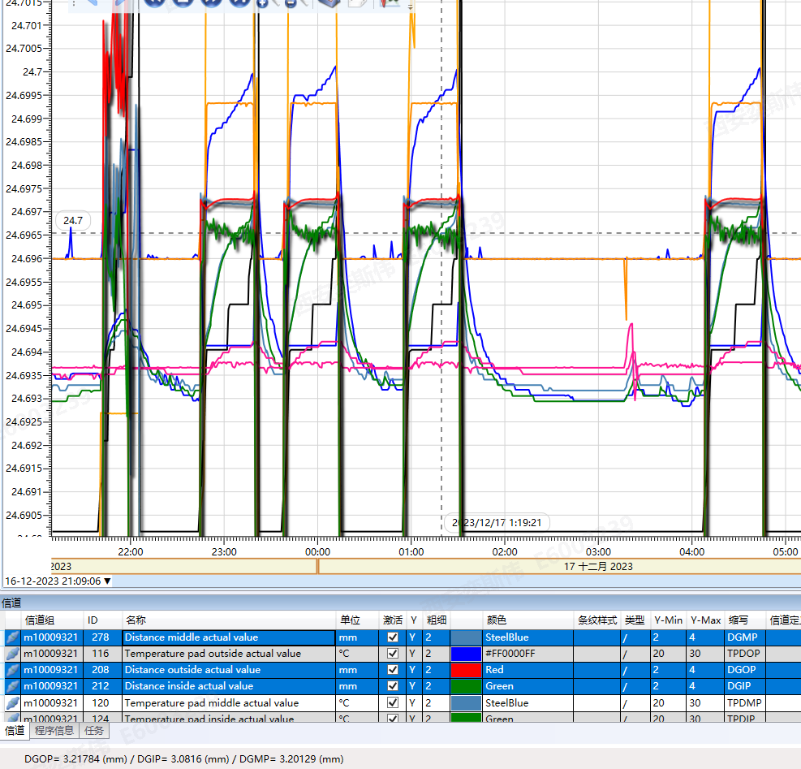
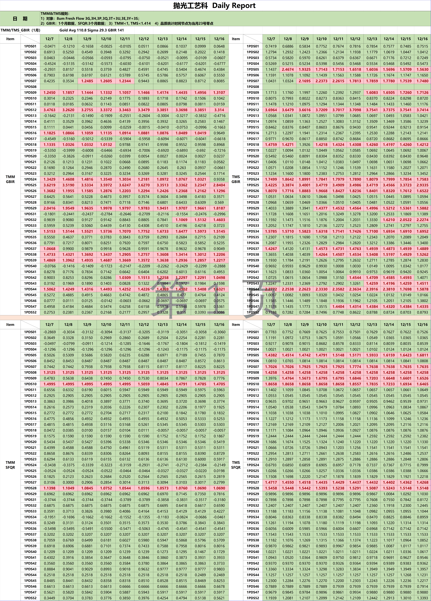
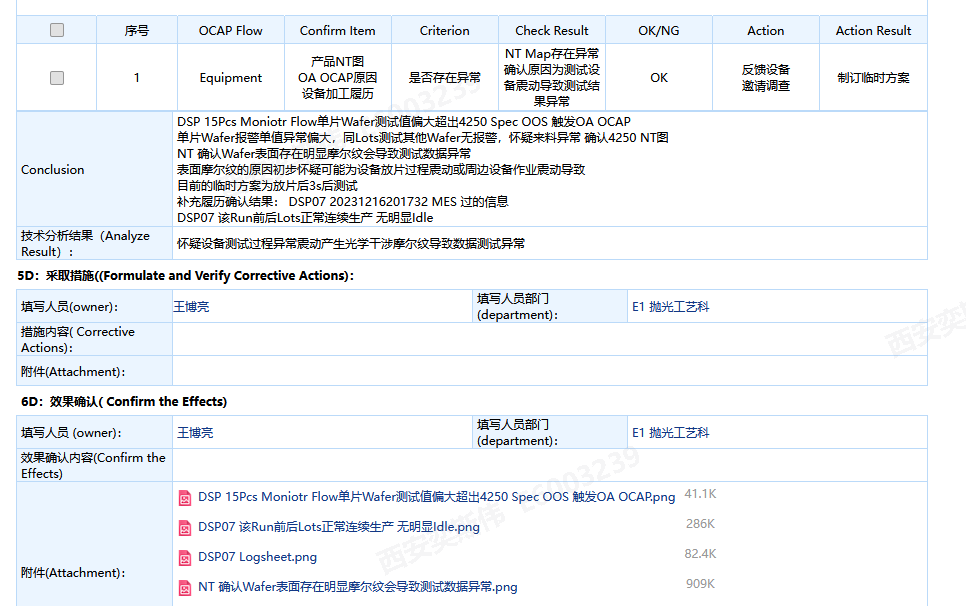

2023年12月17日 08:40:24
1） 异常设备
1. DSP16 划伤
2. 05的pad厚度已经到2.7左右，更换pad需要尽量安排在周内，因为需要更换滑环验证
3. DSP15 GapSensor异常
12/16 借机复机后设备发生异常 GapSensor 中部间隙值异常
反馈设备做动作调整
设备反馈借机为ILU调试 设备接线 对比之前DSP47 ILU借机接线后出现HPMJ异常，怀疑接线同样影响了测厚Sensor

2. Task
1. 3P1100B 3P1600A 这2个料号优先flow
3. 日报&TMS


4. 感觉上班之后是个文本框就可以拿来写临时文档
crtl+F 搜索框
搜索Lot ID的提示框
5. OA OCAP 回复信息

6. Adscan检出来有问题Merge到一起的Lots Lot为13位 倒数第三位是N
7. 佘诗曼
这个人好好看哦~